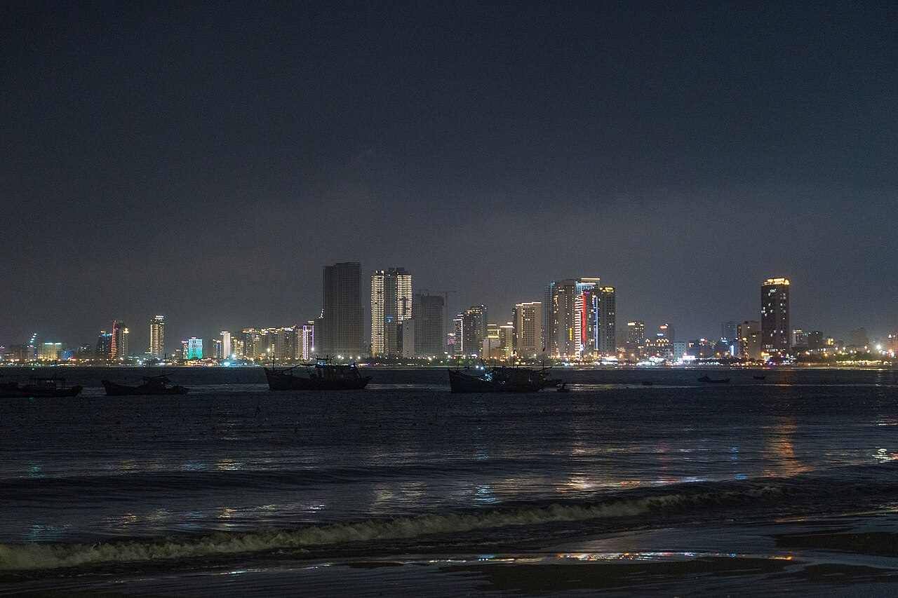

Đà Nẵng nằm bên bờ sông Hàn, nổi bật với những cây cầu độc đáo như Cầu Rồng phun lửa và nước, Cầu Sông Hàn quay giữa đêm. Thành phố còn có Bà Nà Hills trên núi cao và bán đảo Sơn Trà xanh mát.
Mỗi tối cuối tuần, người dân và du khách lại tụ tập hai bên bờ sông để xem Cầu Rồng phun lửa. Ẩm thực miền Trung với mì Quảng, bánh xèo, hải sản tươi ngon càng làm nên sức hút của thành phố đáng sống nhất Việt Nam.